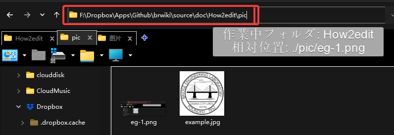

Hexo/Markdown 書き方
まとめ
まず，簡単でまとめると．
| 機能 | 書き方 | 例 |
|---|---|---|
| 見出し | # 見出し1 ##見出し2 |
|
| inLineコード | `code` | code |
| Hyperlink | [ocubridgeHP](http://brdg.civil.eng.osaka-cu.ac.jp/) | ocubridgeHP |
| 画像挿入 |  | グラフを挿入する |
| 太字 | **テキスト** | テキスト |
| 斜体 | *テキスト* | テキスト |
| 打消し線 | ~テキスト~ | |
| リスト | - abc |
- abc |
| 空行・改行 | 2つ、 など |
|
| コードの挿入 | ```md code ``` |
Markdown:md Python: py etc... |
| 引用 | > abc |
> abc |
| 文字色 | <font color="Red">テキスト</font> |
テキスト |
| 水平線 | *** |
*** |
| マークダウンのエスケープ | \`abc` |
`abc` |
書き方
本サイトはMarkdown [1]を基づいてHexo [2]からHtmlに自動変換されたものです． Htmlを触らず，簡単に文書を作成するのは目的なので、基本Htmlのフォーマットは変更できない．
サイトの書き方は基本Markdownと同じ．Wikipekiaを参考してください
アルゴリズム
Nas_sy21:\web\wiki\sourceに置いたものはHTMELのソースコードである．Hexoがコンパイルすれば、自動的にMarkdownの.mdファイルを.htmlファイルに変換できる.- 変換したものは
Nas_sy21:\web\wiki\publicにおいてある． - 写真あるいは文書とかを
sourceに入れたら、URLで参照したら出てくる．e.g.
1 | <img src="/pic/xxxx.png" width="80%" /> |
sourceの中にあるものはHtmlの全文であるが，それ以外のフォルダを触らないでください．
グラフを挿入する．
グラフを挿入する方法いくつかがある．最も使われているのはMarkdownのコード．
1 |  |
Htmlコードも使える．
1 | <img src="./pic/xxxx.png" width="80%" /> |
グラフの位置
グラフの場所は絶対位置と相対位置2種類がある． ./picは相対場所：現在作業中のフォルダ内のPICフォルダを指している． > ./ は現在のフォルダの相対位置
これ を入力すると，以下のようになる． 
他のフォルダ内，あるいはwebsiteのグラフを引用する時，絶対位置を使うのは望ましい．例えば，
 |
 |
|---|---|
 |
? Local絶対位置を引用する時，本サイトのルートディレクトリは
./sourceなので，絶対位置の引用はsource以降のフォルダからスタート.
表の作り方
1 | | Tile1 | Tile2 | Tile3 | |
| Tile1 | Tile2 | Tile3 | Tile4 |
|---|---|---|---|
| 文字を左寄せ | 文字を中央寄せ | 文字を右寄せ | デフォルト（左） |
Hexoにエンベデッドされた機能
Tag
テキストの表記
以下の書き方で，強調したいテキストを着色できる． class_nameを primary, success, info, warning, danger交換し， text をテキストで入力したら変換できる．
1 | {% label class_name@text %} |
例えば:
| Code | Example |
|---|---|
{% label @テキスト %} |
テキスト |
{% label primary@テキスト %} |
テキスト |
{% label success@テキスト %} |
テキスト |
{% label info@テキスト %} |
テキスト |
{% label warning@テキスト %} |
テキスト |
{% label danger@テキスト %} |
テキスト |
情報枠
1 | {% note class_name %} Content (md partial supported) {% endnote %} |
を使えば次のようなTagを作成できる． 例えば： 1
{% note info %} これはテスト {% endnote %}
これはテスト
class_nameを次のクラスに変更する)： - default - primary - success - info - warning - danger
これは default
これは primary
これは success
これは info
これは warning
これは danger
Iconなし： 1
2
3
4{% note info no-icon This is a summary %}
#### Details and summary (No icon)
Note with summary: `note info no-icon This is a summary`
{% endnote %}
グラフの大きさ調整
1 | <img src="url" width="80%" /> |
Flowchart
FlowchartはMermaid [3] を使用している． Documentation
書き方
1 | {% mermaid graph TD %} |
stateDiagram-v2 state if_state <<choice>> [*] --> if_state:Loop if_state --> Statements: yes Statements --> if_state if_state --> [*]: No
Footnote
- 1.Markdown（マークダウン）は、文書を記述するための軽量マークアップ言語のひとつである. ↩︎
- 2.A fast, simple & powerful blog framework ↩︎
- 3.https://theme-next.js.org/docs/tag-plugins/mermaid.html#Settings ↩︎